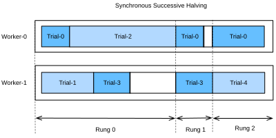
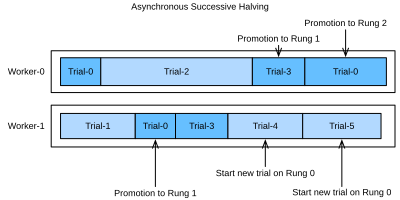

19.5. 异步逐次减半¶
正如我们在 19.3节 中所见，我们可以通过把 超参数配置的评估分布到多个实例或单个实例上的多个 CPU/GPU 上，来加速 HPO。 然而，与随机搜索相比，在分布式设定中异步地运行 逐次减半（SH）并不那么简单。在我们能够 决定接下来运行哪个配置之前，必须先收集当前 梯级水平上的所有观测。这要求在每一个梯级水平上 同步工作进程。例如，对于最低的梯级水平 \(r_{\mathrm{min}}\)，我们必须先评估所有 \(N = \eta^K\) 个配置，然后才能 把其中 \(\frac{1}{\eta}\) 的配置提升到下一个梯级水平。
在任何分布式系统中，同步通常意味着工作进程的空闲时间。 首先，我们常常观察到不同超参数 配置的训练时间差异很大。例如，假设每层的滤波器数量是一个 超参数，那么滤波器较少的网络比滤波器较多的网络 训练完成得更快，这意味着掉队进程会造成工作进程的空闲时间。 此外，一个梯级水平中的槽位数并不总是工作进程数的 整数倍，在这种情况下，某些工作进程甚至可能整个批次都空闲。
图 图19.5.1 展示了使用两个工作进程、\(\eta=2\) 的同步 SH 在四个不同试验上的调度。我们首先 运行 Trial-0 和 Trial-1 各一个轮次，并在它们完成后 立即继续运行接下来的两个试验。我们必须先等到 Trial-2 完成—— 它比其他试验花费的时间长得多——然后才能提升最好的两个 试验（即 Trial-0 和 Trial-3）到下一个梯级水平。这造成了 Worker-1 的空闲时间。 然后，我们继续到梯级 1。这里 Trial-3 也比 Trial-0 耗时更长， 这又导致 Worker-0 额外的空闲时间。一旦到达梯级 2，只剩 最好的试验 Trial-0，它只占用一个工作进程。为了避免 Worker-1 在那段时间空闲，大多数 SH 实现会提前开始 下一轮，并在第一个梯级上开始评估新试验（例如 Trial-4）。

图19.5.1 两个工作进程的同步逐次减半。¶
异步逐次减半（ASHA）:cite:li-arxiv18 使 SH 适应异步 并行场景。ASHA 的主要思想是，一旦我们在当前梯级水平上 收集到至少 \(\eta\) 个观测，就把配置提升到下一个梯级 水平。这一决策规则可能导致次优的提升：某些配置可能被提升到 下一个梯级水平，但事后看来，它们与同一梯级水平上的大多数其他配置相比 并不占优。另一方面，这样做我们就不需要任何同步点。 在实践中，这种次优的初始提升对 性能的影响不大，这不仅是因为超参数配置的排序在不同梯级水平之间 往往相当一致，还因为梯级会随时间增长，并且 越来越能反映该水平上指标值的分布。如果某个 工作进程空闲，但没有配置可以提升，我们就以 \(r = r_{\mathrm{min}}\) （即第一个梯级水平）开始一个新配置。
图19.5.2 展示了相同配置在 ASHA 下的调度。一旦 Trial-1 完成，我们收集两个试验（即 Trial-0 和 Trial-1）的结果，并 立即将其中较好的一个（Trial-0）提升到下一个梯级水平。在 Trial-0 于梯级 1 上完成后，那里的试验太少，不足以支持进一步 提升。因此，我们继续在梯级 0 上评估 Trial-3。一旦 Trial-3 完成， Trial-2 仍在等待。此时我们在梯级 0 上评估了 3 个试验，在梯级 1 上 已经评估了 1 个试验。由于 Trial-3 在梯级 0 上的表现比 Trial-0 差， 且 \(\eta=2\)，我们还不能提升任何新试验，于是 Worker-1 从头开始 运行 Trial-4。然而，一旦 Trial-2 完成并且得分比 Trial-3 差， 后者就被提升到梯级 1。之后，我们 在梯级 1 上收集到 2 次评估，这意味着我们现在可以把 Trial-0 提升到 梯级 2。同时，Worker-1 继续在梯级 0 上评估新试验 （即 Trial-5）。

图19.5.2 两个工作进程的异步逐次减半（ASHA）。¶
import logging
from d2l import torch as d2l
logging.basicConfig(level=logging.INFO)
import matplotlib.pyplot as plt
from syne_tune import StoppingCriterion, Tuner
from syne_tune.backend.python_backend import PythonBackend
from syne_tune.config_space import loguniform, randint
from syne_tune.experiments import load_experiment
from syne_tune.optimizer.baselines import ASHA
19.5.1. 目标函数¶
我们将使用 Syne Tune，目标函数与 19.3节 中相同。
def hpo_objective_lenet_synetune(learning_rate, batch_size, max_epochs):
from syne_tune import Reporter
from d2l import torch as d2l
model = d2l.LeNet(lr=learning_rate, num_classes=10)
trainer = d2l.HPOTrainer(max_epochs=1, num_gpus=1)
data = d2l.FashionMNIST(batch_size=batch_size)
model.apply_init([next(iter(data.get_dataloader(True)))[0]], d2l.init_cnn)
report = Reporter()
for epoch in range(1, max_epochs + 1):
if epoch == 1:
# Initialize the state of Trainer
trainer.fit(model=model, data=data)
else:
trainer.fit_epoch()
validation_error = trainer.validation_error().cpu().detach().numpy()
report(epoch=epoch, validation_error=float(validation_error))
我们还将使用与之前相同的配置空间：
min_number_of_epochs = 2
max_number_of_epochs = 10
eta = 2
config_space = {
"learning_rate": loguniform(1e-2, 1),
"batch_size": randint(32, 256),
"max_epochs": max_number_of_epochs,
}
initial_config = {
"learning_rate": 0.1,
"batch_size": 128,
}
19.5.2. 异步调度器¶
首先，我们定义并发评估试验的工作进程数。我们 还需要通过设定总实际时间的上限，来指定我们希望 运行随机搜索多长时间。
n_workers = 2 # Needs to be <= the number of available GPUs
max_wallclock_time = 12 * 60 # 12 minutes
运行 ASHA 的代码是我们此前为异步随机搜索所做工作的一个简单变体。
mode = "min"
metric = "validation_error"
resource_attr = "epoch"
scheduler = ASHA(
config_space,
metric=metric,
mode=mode,
points_to_evaluate=[initial_config],
max_resource_attr="max_epochs",
resource_attr=resource_attr,
grace_period=min_number_of_epochs,
reduction_factor=eta,
)
这里，metric 和 resource_attr 指定与 report
回调一起使用的键名，而 max_resource_attr 表示目标函数的
哪个输入对应于 \(r_{\mathrm{max}}\)。此外，grace_period 给出
\(r_{\mathrm{min}}\)， reduction_factor 是
\(\eta\)。我们可以像之前一样运行 Syne Tune（这将 耗时约 12
分钟）：
trial_backend = PythonBackend(
tune_function=hpo_objective_lenet_synetune,
config_space=config_space,
)
stop_criterion = StoppingCriterion(max_wallclock_time=max_wallclock_time)
tuner = Tuner(
trial_backend=trial_backend,
scheduler=scheduler,
stop_criterion=stop_criterion,
n_workers=n_workers,
print_update_interval=int(max_wallclock_time * 0.6),
)
tuner.run()
请注意，我们运行的 ASHA 变体中，表现不佳的试验会被 提前停止。这与我们在
19.4.1节 中的实现不同， 那里每个训练任务都以固定的
max_epochs 启动。 在后一种情况下，一个表现良好、达到完整 10
轮的试验， 需要先训练 1 轮、然后 2 轮、然后 4 轮、然后 8 轮，每次都
从头开始。这种暂停—恢复调度可以通过在每轮训练之后
对训练状态做检查点来高效实现，但我们在这里避免
额外的复杂性。实验完成后，我们可以检索并绘制结果。
d2l.set_figsize()
e = load_experiment(tuner.name)
e.plot()
19.5.3. 可视化优化过程¶
我们再次可视化每个试验的学习曲线（图中每种颜色代表一个试验）。请将其与 19.3节 中的异步随机搜索相比较。正如我们在 19.4节 中对逐次减半所见，大多数试验在 1 或 2 轮 （\(r_{\mathrm{min}}\) 或 \(\eta * r_{\mathrm{min}}\)）时被停止。然而，试验并不都在 同一点停止，因为它们每轮所需的时间 不同。如果我们运行标准逐次减半而不是 ASHA，那么 在把配置提升到下一个梯级水平之前，我们需要同步 工作进程。
d2l.set_figsize([6, 2.5])
results = e.results
for trial_id in results.trial_id.unique():
df = results[results["trial_id"] == trial_id]
d2l.plt.plot(
df["st_tuner_time"],
df["validation_error"],
marker="o"
)
d2l.plt.xlabel("wall-clock time")
d2l.plt.ylabel("objective function")
19.5.4. 小结¶
与随机搜索相比，逐次减半在异步分布式设定下运行起来 并不那么轻松。为了避免同步点，我们尽可能快地把 配置提升到下一个梯级水平，即使这意味着提升一些错误的配置。 在实践中，这通常不会造成太大损害，而且异步调度相对于同步调度的 收益通常远高于次优决策所带来的损失。